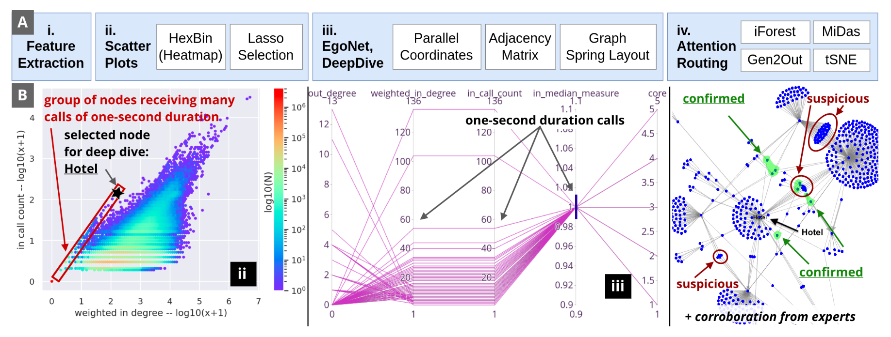
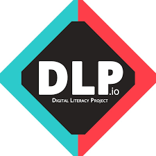

Ph.D. Candidate in Computer Science
Carnegie Mellon University
saranyav [at] andrew.cmu.edu
I am a PhD candidate in Computer Science at Carnegie Mellon University, advised by Christos Faloutsos and Matt Fredrikson, and an Anthropic Security Fellow. I study the safety and security of AI systems under adversarial conditions, developing structured, verifiable ways for increasingly autonomous systems to check claims and enforce consistency, spanning red-teaming, prover-verifier oversight, and neurosymbolic reasoning. Before CMU, I earned my A.B. at Harvard and spent three years as a data scientist at Goldman Sachs. I am a 2026 ML and Systems Rising Star and a DoD NDSEG Fellow.
Saranya Vijayakumar, Matt Fredrikson, Norman Sadeh
Saranya Vijayakumar, Matt Fredrikson, Christos Faloutsos
PDFSaranya Vijayakumar, Philip Negrin, Christos Faloutsos
PDFNils Palumbo, Ravi Mangal, Zifan Wang, Saranya Vijayakumar, Corina Pasareanau, Somesh Jha
PDFPriyanshu Kumar, Saranya Vijayakumar, Elaine Lau, Tu Trinh, Zifan Wang, Matt Fredrikson
PDFAI Governance Course (17-416/17-716)
Information Security, Privacy & Policy (17-331/631) · Slides
AI Governance Course (17-416/17-716)
Information Security, Privacy & Policy (17-331/631) · Recording (CMU Internal)
Information Security, Privacy & Policy (17-331/631)
I believe in creating an inclusive learning environment that emphasizes practical understanding and critical thinking. My teaching approach combines theoretical foundations with hands-on experience, preparing students for both academic and industry challenges.
TA, Information Security, Privacy & Policy (17-331/631), with Norman Sadeh & Hana Habib
Fall 2023TA, Rapid Prototyping (15-294 & 15-394), with Dave Touretzky
Spring 2023Eberly Center Future Faculty Program, teaching development
2021 - 2023A few themes that cut across my work. Full details are in my CV and publications.
Red-teaming and alignment of LLMs deployed as autonomous agents. Showed that refusal-trained LLMs are easily jailbroken as browser agents (ICLR 2025), and now work on prover-verifier oversight and interpretability of agentic systems.
Grounding neural inference with SMT solvers (NeurIPS 2023 Spotlight), mechanistically interpreting transformer-based SAT solvers (ICML 2025), and formal verification of a secure messaging protocol used by the French government (Inria).
Scalable visualization and anomaly-detection methods for million-scale telecom and credit-card graphs, yielding deployment-ready systems with Mobileum (CIKM 2023, IEEE Big Data 2022, AAAI-23 demo).

Earlier work spanning algorithmic fairness (Harvard Political Review, undergraduate thesis), a worldwide encryption survey with Bruce Schneier (covered by NBC News, The Intercept), and a CSET review on cybersecurity risks of AI-generated code for Georgetown.
Healthcare technology solutions with Partners in Health, Lima, Peru

Led computer science education programs in Boston public schools
Data Scientist, Electronic Trading (GSET), Goldman Sachs
2018 - 2021Data Scientist, Distributed Organizing, Beto O'Rourke for U.S. Senate
Summer 2018Cybersecurity Intern, Booz Allen Hamilton
Summer 2017Python, PyTorch, Transformers, TensorFlow, Tinker
Pre-training, SFT, RLHF, DPO, Red-teaming
Graph ML